| 日付 | 2014年5月3日（土） - 2014年5月5日（月） | ||
|---|---|---|---|
| 山域 | 越後 | ||
| メンバー | 家族（妻、長女・3歳、長男・0歳） | ||
| 山行形態 | 子連れ2泊3日ホテル泊 | ||
| アクセス | 車 | ||
| ルート (Map) |
|
2日目
今朝はよく晴れ渡っている。
宿の前からは端正な形の飯士山が見えている。
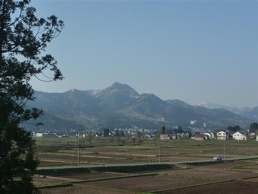
朝食前に宿の周りを散歩する。
冬はスキー客で賑わう場所だが、この時期は閑散としている。
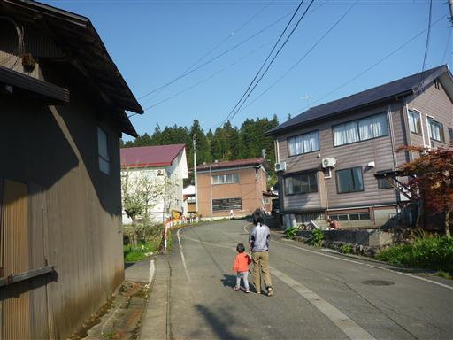
道端にツクシが顔を出している。
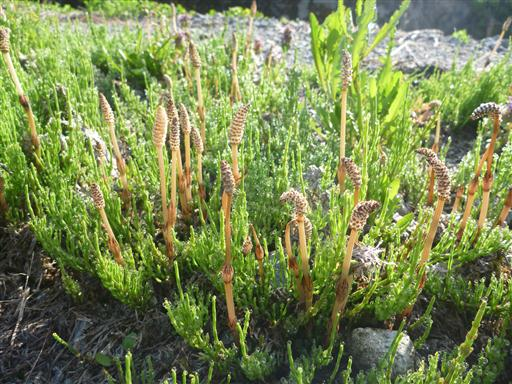
本日はまず八海山ロープウェイに向かう。
八海山中腹の標高1147m地点まで連れて行ってくれる。
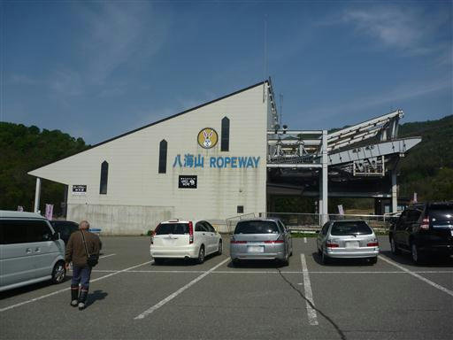
駐車場からは八海山がよく見えている。
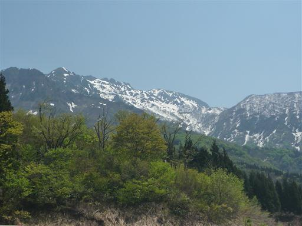
ロープウェイに乗車。ここのロープウェイはなぜか西武が運行している。
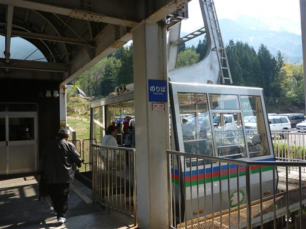
窓から見える尾根は新緑が美しい。ここにもタムシバの花が見えている。
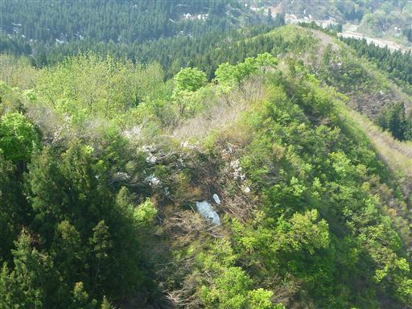
ツアー客などもいるようで、車内は比較的混雑している。
突然、隣の人に声をかけられる。なんと、山友達の家族一行だ。
GWとはいえ、同じ日に同じ場所に来て、同じロープウェイの同じ場所に乗るとは、なんという偶然だろう。
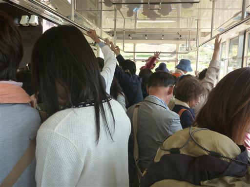
山頂駅に到着。当然この辺りは深い雪に覆われている。
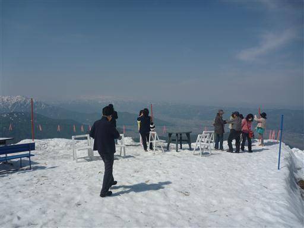
近くの展望台までスノーモービルで運んでくれる。料金は300円だ。
娘は音を怖がっているのでパスする。
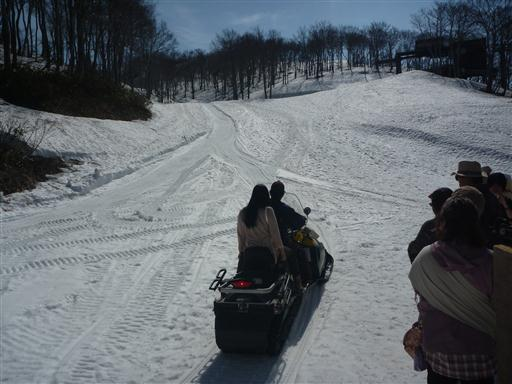
展望台までは階段も用意されているので歩いて向かう。
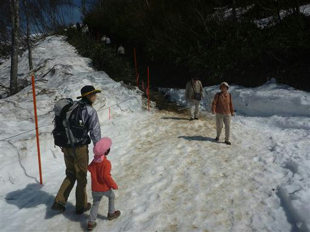
階段と展望台付近は除雪されている。
歩いても1～2分程度で到着だ。
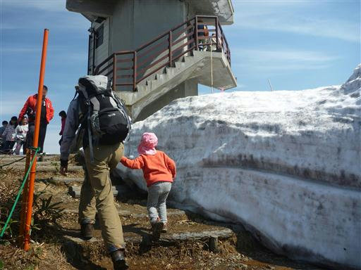
展望台からは360度の景色が広がる。
遠くに八海山の山頂部が見えるが、前の尾根が少々邪魔だ。
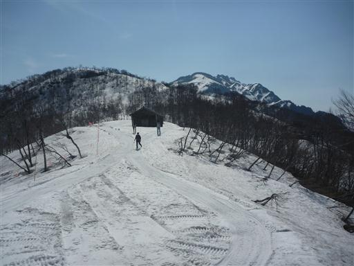
こちらは北方の展望。遠くに見える白い山は守門岳。
案内には佐渡島まで見えるように記載されているが、
今日は空気が霞んでいるため、そこまで遠くは見えない。
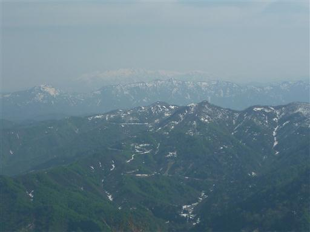
こちらは巻機山。比較的近くにあるので非常に目立つ。
八海山と並んで南魚沼を代表する名峰だ。
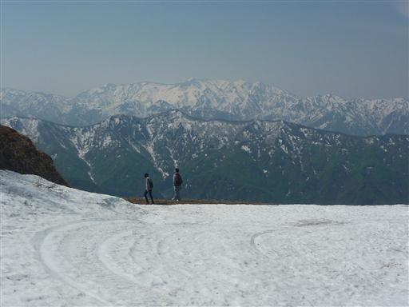
山頂駅と展望台を往復するだけでは勿体ないので、少し雪の上を散策することにする。
娘は雪が気に入ったらしく、あまり怖がっていない。
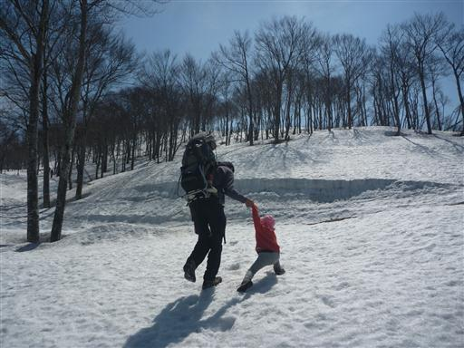
雪の急斜面を登っていく。雪はよく締まっているので割と歩きやすい。
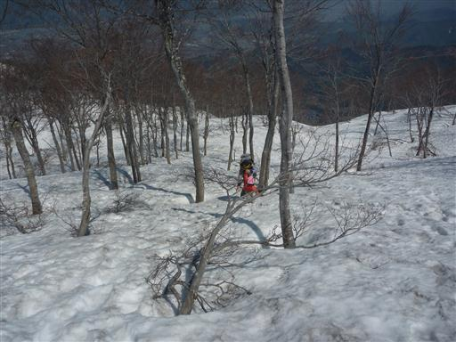
見晴らしの良い尾根に到着。
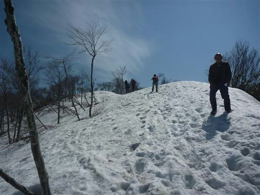
ここからは巻機山を始め白い山々を望むことができる。
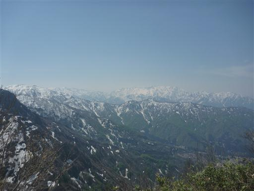
友人家族が先を歩いていたので、我々も少し尾根を歩いてみる。
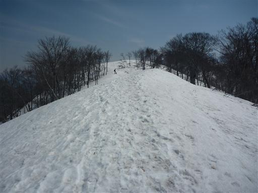
木の周りは雪が解けて深い穴が開いている。
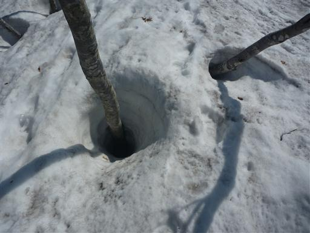
眼下にロープウェイの山頂駅と展望台が見える。あそこからここまで登って来た。
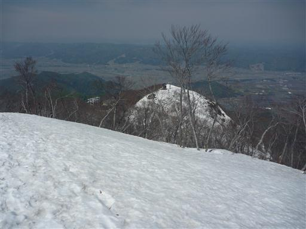
何かの動物の糞らしきものが落ちている。
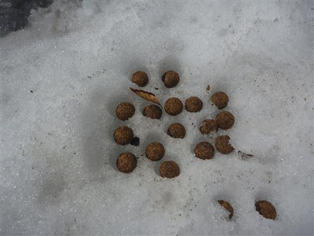
小さなピークに到着。ここで友人家族と合流。
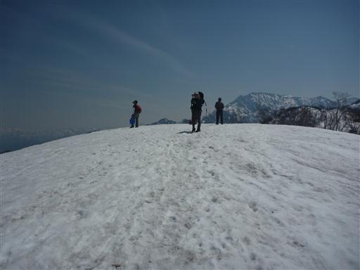
ここは絶好の展望台。目の前に越後駒ヶ岳が見えている。
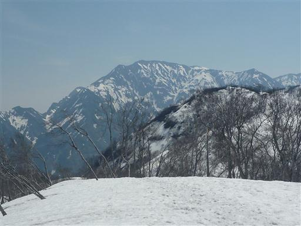
そしてこちらは八海山。下の展望台からとは比べものにならないくらい迫力がある。
八海山に向かって歩いていく人を何人か見かける。
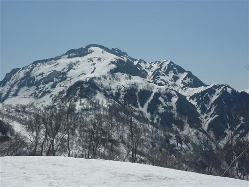
我々は写真を撮ったりお菓子を食べたりして、少し歓談した後は元来た道を引き返す。
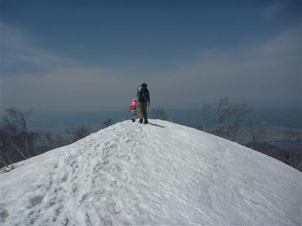
帰りは斜面を滑り降りて行く。
息子を背負い、娘と手を繋ぎながらだと、なかなかうまく滑れないが、
娘は楽しかったらしく喜んでいた。
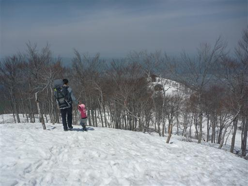
ロープウェイ駅まで戻ってくる。
少し足を延ばしたおかげで非常に充実した観光になった。
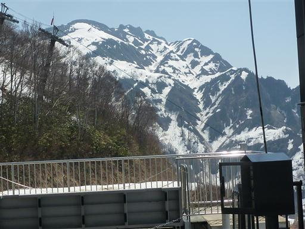
八海山を下山した後は清津峡を目指す。
南魚沼市からの道は土砂崩れで通行止のため、遠回りして十日町市からアクセスする必要がある。
十日町市はへぎそばが有名で、由屋という有名店に入ろうとしたが大混雑で入れず。
向かいの春日屋という店に入ったが、こちらでも40～50分程度待たされる。
へぎそばは、なかなかおいしかった。
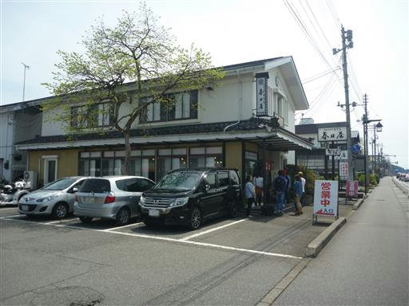
昼食をとったら清津峡に向かう。
それなりの観光地のようで、土産物屋が軒を連ねている。
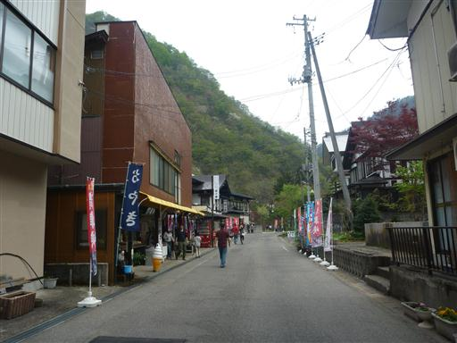
水の色はなかなか美しい。
太陽が雲に隠されて日差しがなくなってしまったのが残念だ。
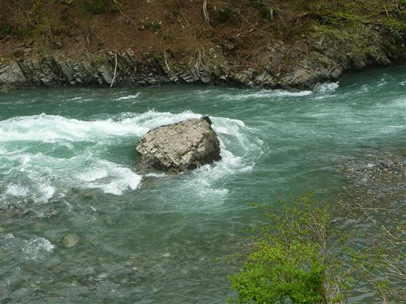
ここから上流が、川幅が狭まった峡谷となっている。
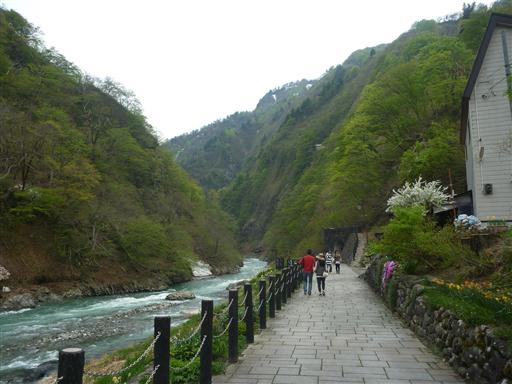
清津峡渓谷トンネルの入口に到着。
ここから先、峡谷はこのトンネルから見学することになる。入場料は600円とそれなりだ。
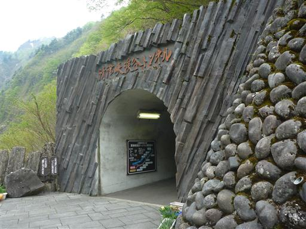
トンネルは見晴所まで750m。
娘はなぜか最近トンネルが怖いらしく、先週のアクアラインも昨日の関越トンネルも半泣きだった。
本日も案の定、半泣きで「抱っこ～」と言っている。
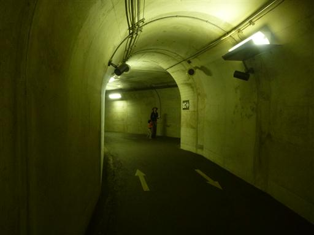
見晴所まではそこそこ距離がある。
単調なトンネルに飽きないよう、写真展示やイルミネーションなどの工夫が施されている。
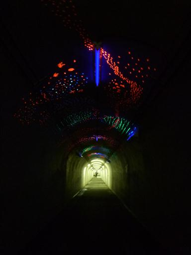
第一見晴所に到着。
トンネルの先から峡谷を望むことができる。
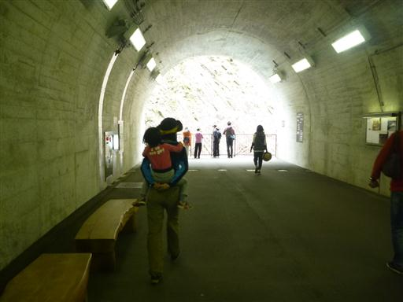
眼下には激しい流れが見られる。
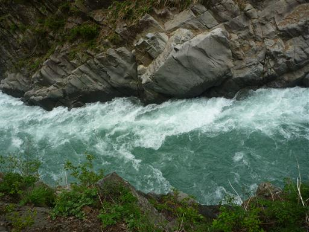
まだスノーブリッジが残っている。大量の土が積もっていて汚い。
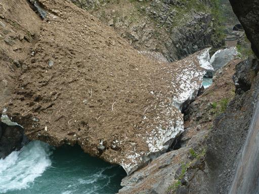
こちらは第二見晴所からの展望。
この峡谷は柱状節理が削られた珍しい峡谷で、日本三大峡谷に選ばれている。

続いて第三見晴所。
見える景色はさほど変わらないが、対岸の岩壁が凄まじい。
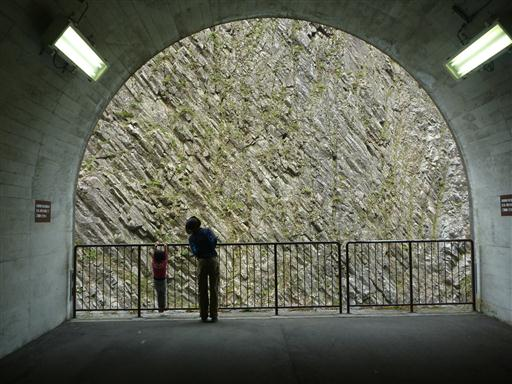
トンネルが左にカーブし、最後のパノラマステーションに到着する。

パノラマステーションからの展望。ここでも手前のスノーブリッジが邪魔だ。
最後は上流から下流方面を望むような形になる。
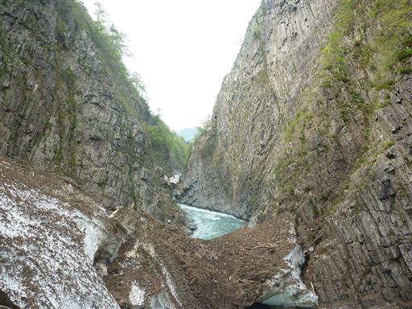
柱状節理の岩壁を見上げる。
珍しい峡谷なのかもしれないが、日本三大峡谷と言われると少し迫力不足な感じがする。
トンネル内を歩いて、所々で覗くだけというのが、いけないのかもしれない。
以前は峡谷沿いの遊歩道があったらしいが、落石死亡事故が発生し閉鎖されてしまった。
その後、観光者のためにこのトンネルができたらしいが…
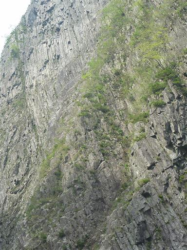
トンネル内にあった雪崩時の写真。トンネルと言えども維持管理は大変そうだ。
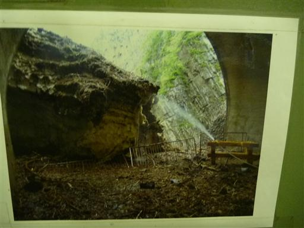
清津峡を後にし、帰り道に魚沼スカイラインを車で走ってみることにする。
途中で小さな棚田を発見。この辺りは棚田の名所で、カメラマンが集まる有名な棚田もあるらしい。
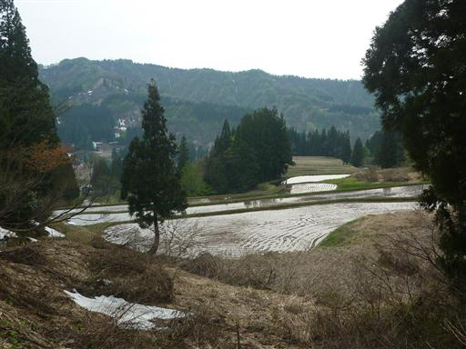
スカイラインの途中にある展望台に立ち寄る。
六日町の街並みと背後に巻機山が望める。
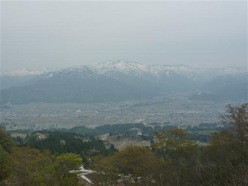
足元にフキノトウがたくさん生えている。
もうかなり生長してしまっているので食べることはできなさそうだ。
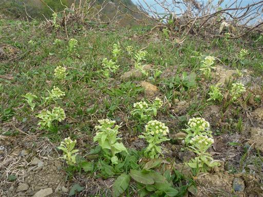
目の前に見える樽山の展望が良いらしいので、一人小走りで行ってみることにする。
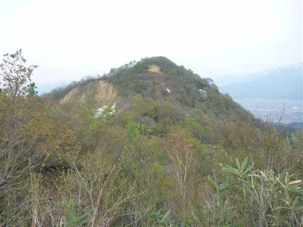
歩く人が少ないのか踏み跡は薄く、少々藪っぽい。
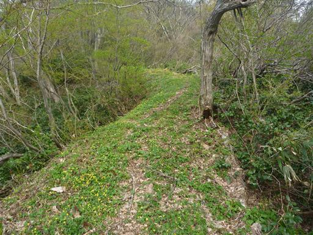
足元にオオバキスミレが群生している。
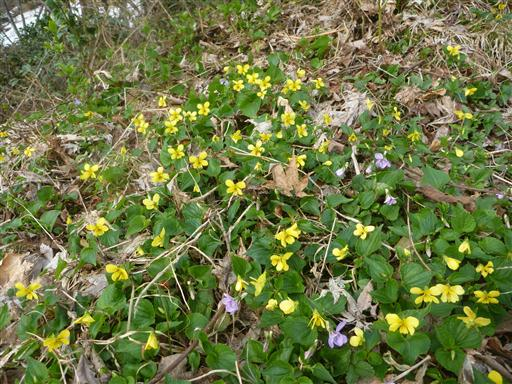
この辺りも、まだ所々で雪が残っている。雪と新緑が美しい。
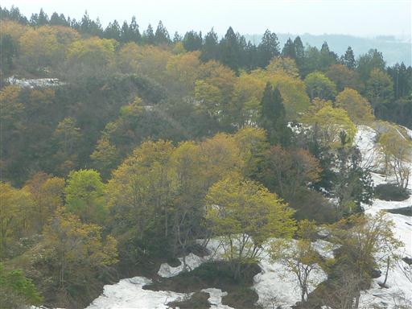
樽山山頂に到着。
ここからは360度の大展望が広がる。目の前に見えるのは八海山と中ノ岳。
十日町方面の冴えない山々も望むことができる。
駐車場に戻ったらもう16時半。スカイラインの残りを走って宿に戻る。